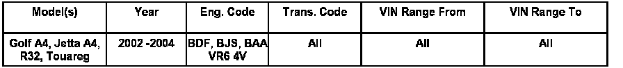
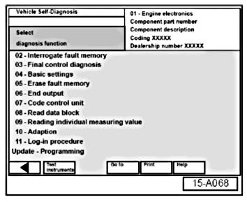
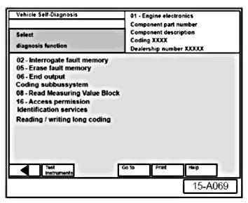
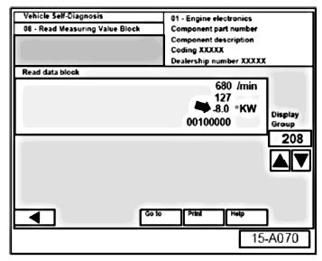
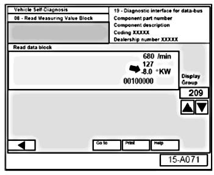
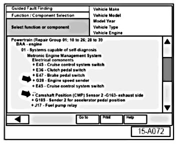
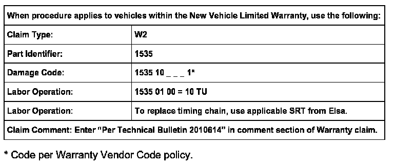

Engine - MIL ON/DTC P1347 / 17755 And P1340 / 17748
Condition
15 07 03 Jan. 31, 2007, 2010614, supersedes Technical Bulletin Group 15 number 04-01, dated Jun. 3, 2004 due to inclusion in ElsaWeb.
MIL ON with DTCs P1347/17755 and P1340/17748 Stored In Memory
Technical Background
Malfunction Indicator Light (MIL) is ON and Diagnostic Trouble Codes P1347/17755 and P1340/17748 are stored in DTC memory.
This condition may be related to the elongation of the timing chain.
Production Solution
N/A
Service

- From VAS 5051/5052 Start-up screen, select "Vehicle Self-Diagnosis".
- Select vehicle system "01-Engine electronics".
- Select diagnosis function "02
- Interrogate fault memory".
- Either DTC P1340/17748 or P1347/17755 must be present in fault memory.
If above DTCs are not present in fault memory:
- Do not proceed with this bulletin. Refer to Guided Fault-Finding in the VAS 5051/5052 to continue diagnosis of MIL ON condition.

If above DTCs are present in fault memory:
- Select backward arrow on navigation bar.
- Select diagnosis function "08
- Read Measuring Value Block".
- Input "208" on keypad to select "Display group "208".
- Select "Q" button to confirm.

In Display group 208 the value in " Field 3" (arrow) should be within a range of + 8.0 degree KW to - 8.0 degree KW.
- Select upward arrow below display group number.
- Display group will increase to "Display group 209".

- In Display group 209 the value in "Field 3" (arrow) should be within a range of +8.0 degree KW to -8.0 degree KW.
If "Field 3" measurements in display groups 208 and 209 are within range of +8.0 degree KW to -8.0 degree KW:
- Do not proceed with this bulletin. Refer to Guided Fault-Finding in the VAS 5051/5052 to continue diagnosis of MIL ON condition.
If "Field 3" measurements in display groups 208 and 209 are less than -8.0 KW (-9.0 to -14.0 KW):

- Return to VAS 5051/5052 Start-up screen.
- Select "Guided Fault-Finding"
- Select "Function/Component Selection" from the "Go to" button on navigation bar.
- Check signal function of "G28
- Engine Speed Sensor" and "G163
- Camshaft Position Sensor 2" (arrows).
If signal functions of "G28 and G163 are OK:
- Replace upper timing chain. Refer to Repair Group Cylinder Head, Valvetrain.

Warranty
Required Parts and Tools
No special parts required
No special tools required